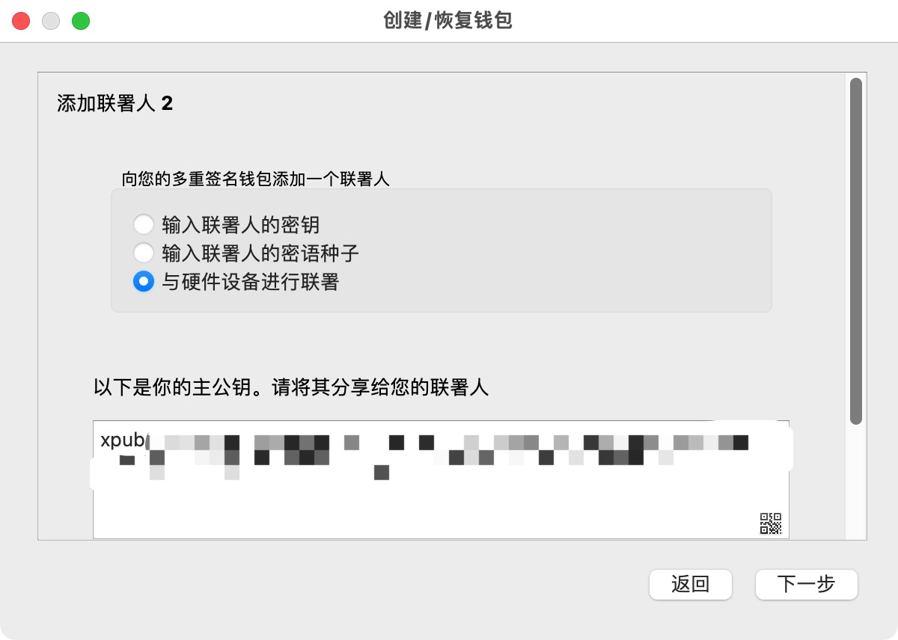

How to use electrum?#
官方网站#
github地址有点点奇怪，所以经常好多冒充的。
初始界面#
创建多签钱包#
选择 2/2 签名#
为第一个签名选择硬件钱包#
连接第一个硬件钱包Ledger#
选择多签地址类型#
Electrum默认是选择了segwit的地址类型。Segwit地址类型确实有好处，就是在发送的时候，省手续费。不过我出于对传统地址的热爱，还是选择了Legacy类型。
界面中的 m/45h/0 来自 BIP0045 ( bitcoin/bips )。这是专门留给 P2SH 的衍生路径。这玩意儿的重要性在于，可以让electrum以后不连硬件钱包也能生成更多的多签地址，以作为收款地址和找零地址。这样挺好的，不然老是和硬件钱包进行交互的话，徒增风险。但是这样也有个坏处，因为新生成地址完全是在脱离硬件钱包的情况下完成的，就无法在硬件钱包上进行确认操作。如果电脑被黑了，这些地址篡改了，收钱和发钱可能就有风险了。
选择下一个签名钱包#

界面上显示的 xpub 开头的字符串是Ledger钱包中，在我们指定的路径下的所谓 主公钥 ，这玩意儿是用来生成别的公钥的，最好不要泄露。不过这个的泄漏只是会影响隐私性，不会影响币的安全性。简单而言，别人拿到这个之后，如果再同时拿到你第二个签名的 主公钥，就能推测出所有你的多签钱包的地址。可以想象，别人拿到这两个主公钥，然后导入自己的electrum，就能看到你的所有收款和付款交易了。
选择trezor为第二个钱包#
我发现电脑上可以同时连着ledger和trezor，这就挺方便的了。我之前还以为必须依次插拔连接呢。
Trezor和Ledger选择一样的path。
可以输入Trezor上的密码，强烈建议选择在trezor设备上输入，而不是在电脑上输入。如果不输入，就是采用默认钱包，我这里选择不输入。刚才Ledger的时候并不需要输入，但是我们可以在加载Ledger信息之前，手工在Ledger上切换到不同密码之下来达成。Trezor是由应用软件来激发密码的，所以这里有个特殊的步骤。
加密Electrum存储的信息#
我做实验不想用这个，所以没有输入。
Electrum主界面#
收币#
收到币之后，electrum会有通知。然后收到的币会出现在 历史 界面中。当一个地址收到币之后，再请求收币，electrum会重新生成一个新地址。
发币#
发币的过程需要两个钱包进行各种确认和签名。
Trezor钱包貌似迅速就ok了。
Ledger钱包等了半天没反应，我插拔了好几次，最后感觉是处理速度太慢导致的。各种确认加签名起码花了几分钟。